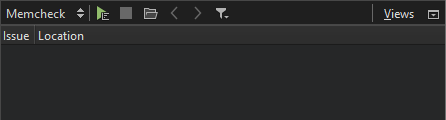
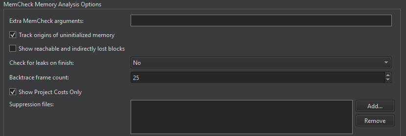

Detecting Memory Leaks with Memcheck
You can use the Memcheck tool included in the Valgrind tool suite to detect problems that are related to memory management in applications. You can use the tool together with the GDB debugger. When a problem is detected, the application is interrupted and you can debug it.
Note: You can install and run Memcheck locally on Linux. You can run it on a remote host or device from any development machine. On Windows, you can use the Heob heap observer to receive similar results.
After you download and install Valgrind tools, you can use Memcheck from Qt Creator.
To analyze applications:
- In the Projects mode, select a debug build configuration.
- Select Debug to open the Debug mode, and then select Memcheck on the toolbar.
- Select the
 button to start the application.
button to start the application. - Use the application to analyze it.
- Select the
 button to view the results of the analysis in the Analysis view.
button to view the results of the analysis in the Analysis view.
While the application is running, Memcheck checks all reads and writes of memory and intercepts calls that allocate or free memory or create or delete memory blocks. The results are displayed when you stop Memcheck. Click a line to view where a memory leak occurred and a stack trace that shows what caused it.

Move the mouse on a row to view more information about the function.
For more information about using Memcheck, see Interpreting Memcheck's Output in the Valgrind documentation.
Selecting Options for Memory Analysis
You can specify analyzer settings either globally for all projects or separately for each project in the run settings of the project.
Stack traces can get quite large and confusing, and therefore, reading them from the bottom up can help. If the stack trace is not big enough or it is too big, select Tools > Options > Analyzer and define the length of the stack trace in the Backtrace frame count field.

Memcheck also reports uses of uninitialised values, most commonly with the message Conditional jump or move depends on uninitialised value(s). To determine the root cause of these errors, the Track origins of uninitialized memory check box is selected by default. You can deselect it to make Memcheck run faster.
Memcheck searches for memory leaks when the client application finishes. To view the amount of leaks that occurred, select Summary Only in the Check for leaks on finish field. To also view details of each leak, select Full.
Showing Reachable and Indirectly Lost Blocks
Reachable blocks are blocks that are pointed at by a pointer or chain of pointers and that might have been freed before the application exited. Indirectly lost blocks are considered lost because all the blocks that point to them are themselves lost. For example, all the children of a lost root node are indirectly lost.
By default, Memcheck does not report reachable and indirectly lost blocks. To have them reported, select the Show reachable and indirectly lost blocks.
Suppressing Errors
Memcheck detects numerous problems in the system libraries, such as the C library, which come pre-installed with your OS. As you cannot easily fix them, you want to suppress them. Valgrind reads a list of errors to suppress at startup. A default suppression file is created by the ./configure script when the system is built.
You can write your own suppression files if parts of your project contain errors you cannot fix and you do not want to be reminded of them. Click Add in the Memory Analysis dialog to add the suppression files. For more information about writing suppression files, see Suppressing Errors in the Valgrind documentation.